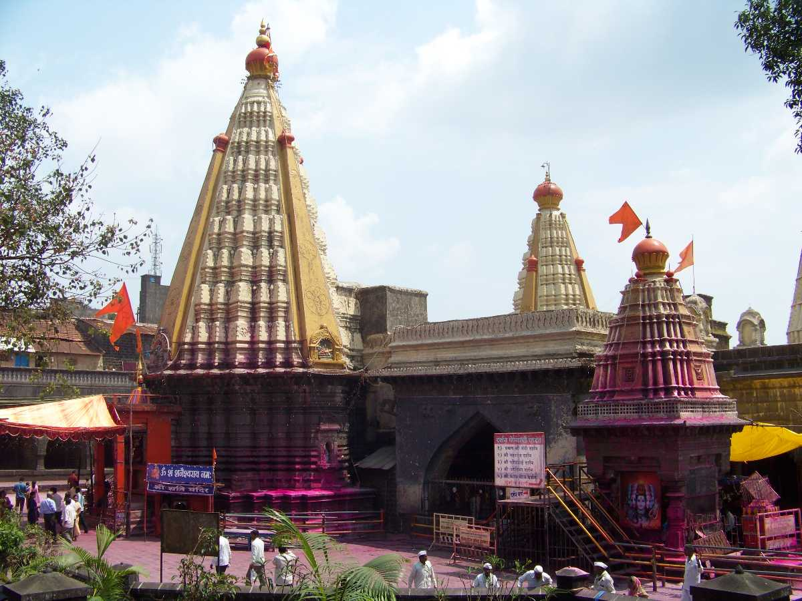
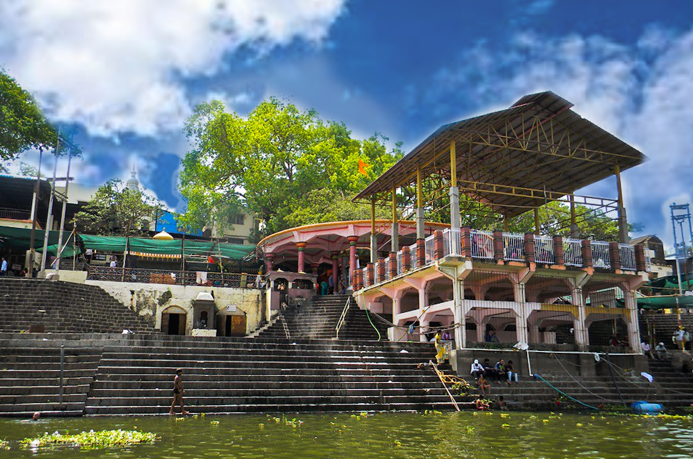
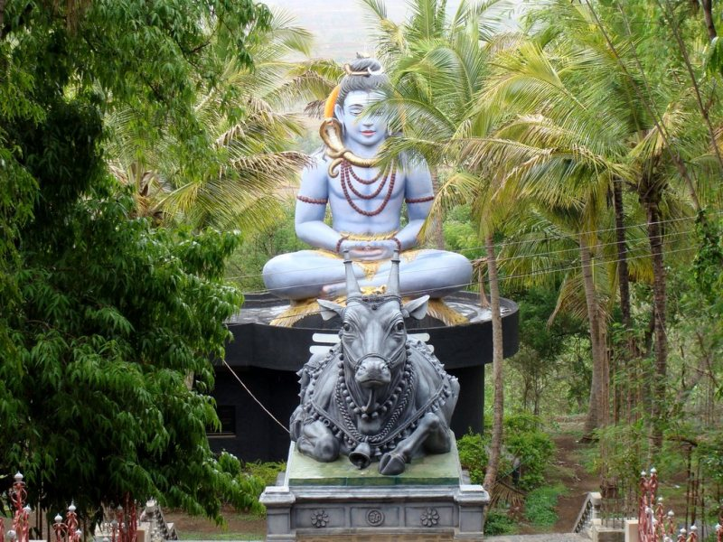
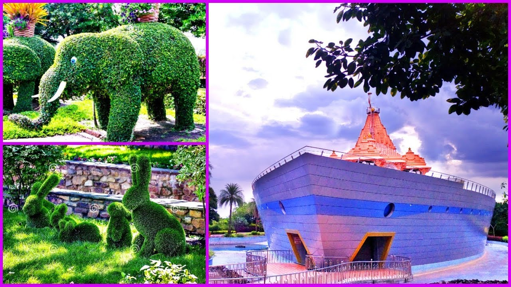

Mahalakshmi Mandir |
Ambabai Temple (also known as Mahalaxmi Mandir) is an important Hindu temple dedicated to Goddess Lakshmi, who resides here as Supreme Mother Mahalakshmi and is worshipped by locals as Ambabai. Goddess Mahalakshmi is the consort of Lord Vishnu and it is customary among Hindus to visit Tirumala Venkateswara Temple, Kolhapur Mahalakshmi Temple and Padmavathi Temple as a yatra (pilgrimage). It is believed that visiting these temples as a pilgrimage helps achieve moksha (salvation).
Mahalakshmi Mandir
|
 Kopeshwar Temple |
Kopeshwar Temple is at Khidrapur, Kolhapur district, Maharashtra. It is at the border of Maharashtra and Karnataka. It is also accessible from Sangli as well. It was built in the 12th century by Shilahara king Gandaraditya between 1109 and 1178 CE. It is to the east of Kolhapur, ancient & artistic on the bank of the Krishna river. Even though Silaharas were Jain kings, they built and renovated various Hindu temples, thus depicting their respect and love for all religions. Kopeshwar means angry Shiva.
Kopeshwar Temple
|
Jyotiba Temple |
This temple is ensconced on a hill at a height of 3124 feet above sea level, 18 km to the north-west of Kolhapur city. Legend states that three gods took the form of Jyotiba to destroy the evil demon Ratnasur who was terrorizing the region. Jyotiba, the amalgamation of the souls (jyotis) of 3 deities- Brahma, Vishnu and Mahesha is believed to have helped goddess Mahalaxmi to liberate the region from the tyranny of Raktabhoj Rakshasa and Ratnasur the demon. Jyotiba founded his kingdom on this mountain.
Jyotiba Temple
|
Narsobawadi Temple |
Nrusinhawadi is famous pilgrimage place in Kolhapur district. Nrusinhawadi is a capital of Datta devotees. This religious place is situated on the sacred confluence of Krishna and Panchganga rivers at distance of 45Km from Kolhapur.
Swayambhu Paduka of Dattaguru are worshipped daily. The real third incarnation of Shri Dattaguru, Shri Nrusinha saraswati stayed in this area full of Oudumber trees for 12 years and he flourished this region.
The place has natural beauty and refreshing scenery due to confluence of Krishna and Panchaganga and thick forests of Audumber trees. Swamiji’s stay added sacredness and the attraction of people.
Narsobawadi Temple
|
Kanheri Math |
Siddhagiri Gramjivan Museum (Kaneri Math) at Kaneri, Kolhapur district, Maharashtra, is a sculpture museum. The full name is Siddhagiri Gramjivan (Village life) Museum. It is situated at Shri Kshetra Siddhagiri Math, a campus built around the Moola-Kaadsiddheswar Shiva temple.
Kanheri Math
|
Bahubali |
Bahubali Atishaya kshetra known by the Idol of Lord Bahubali (Jain tirth place) in standing posture is situated on about 50 steps up and 28 feet in hight; sthapana/installed in 1963. The idol is installed close to the feet of the hill and can be seen from kms away from the hill.This place is comes under kumbhoj village.
From the Top until the bottom of the hill there are fourteen models of Siddha Khetras and Tirthankar Nirwaan locations. Models In the back side of this idol there are six other you can see the models of Gajpantha, Taranga, Mangitungi,Sonagiri and Pavagiri sidha kshetra.On the right you can see a big Kailash Parvat models where seventy two temples models made in cement and stone. After that you have Girnarji depicting Prince Neminath ‘Viaragya’ event in front. This is also must to have look .
On the left you see a model of Sammeed Shikharji with all the ‘tonks’ Below this you have eight more smaller models that depict the other Siddha Khetra’s. After coming down on the right side you have Mahaveer Digmabar Jain ‘Jal Mandir’ temple. On the left you have ‘Ratnatrya’ Digambar Jain temple.
Bahubali
|